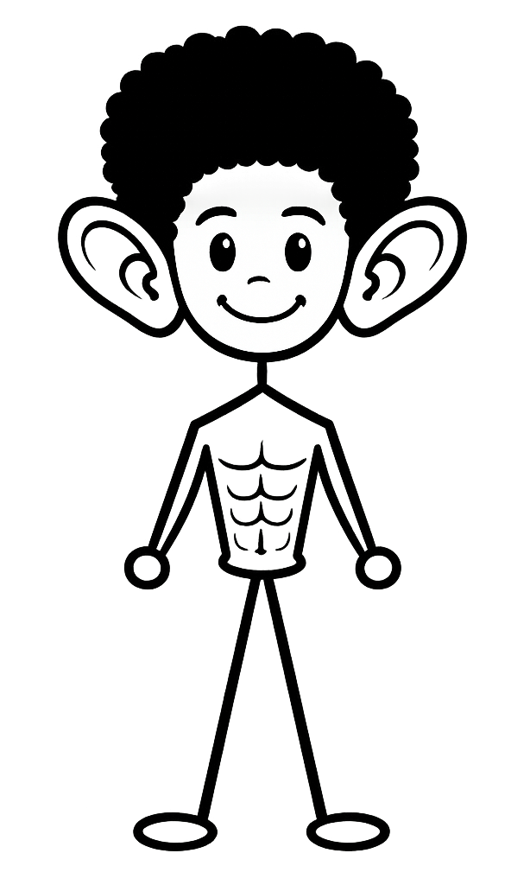
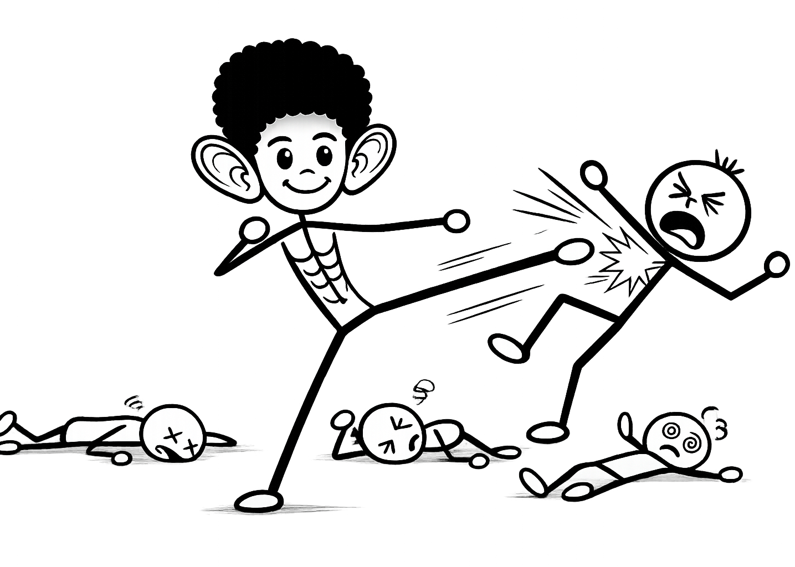

WHAT ABOUT THIS GUY?
Blogs were created for people like me—the ones whose faces should not be trending to people, and whose voices should only be heard when a life is at stake. This is why I have opted to hide here, instead of being a TikToker, behind a keyboard, letting the QWERTY do what my face and voice failed to do.
The idea of reading when you can listen to and watch a video is probably the most depressing thing one can do as a hobby. I believe that many schools of psychology have covered the benefits of reading. Spoiler alert—it improves your sex drive.
This blog is obviously for the ones who pick up a book occasionally, even if you use it to kill a cockroach. I invite you to carefully analyze my interpretation of the things that I consider essential topics, like how farting makes you skinnier.
I do not hold the truth. I am always open to being wrong, and I strongly believe that in the near future, I will contradict what I say today. I know this sounds oxymoronic, but part of life is to learn, then unlearn, and learn again. After all, the most brilliant minds once thought the earth was round. We now all know that the earth is crazy, not round.
Please feel free to leave your unrestricted criticism. Make it harsh, clear, and constructive, but keep in mind that I have a black belt. Please don’t make me use it on you. Wink.
Click 4 Blogs